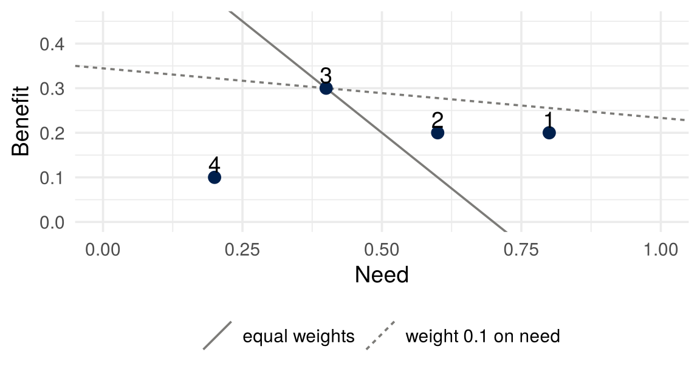

Value pluralism, utility, and justice
Important note: this week is about what we value, how a single number stands in for several values, and how much a probability model is asked to carry when choices are made by expected utility. The mathematics below is not contested. Which values are intrinsic, whether several values can be reduced to one, and which principle of distribution is right are contested, and my view is one view. A well-argued position I think is wrong can still get full marks.
Summary
Many of the course’s problems have the same shape: something valued for what it brings about, such as cost, reward, engagement or a benchmark score, was optimized as if it were the end. Value pluralism holds that there are several ultimate values, not one. A score that combines several values ranks every pair of options, including pairs the values themselves leave open, and its weights are an exchange rate someone chose.
Expected utility combines outcomes across uncertain states with a probability measure, and in the standard theory the utility scale itself is defined through probabilities. When there is no list of outcomes, no grounds for the probabilities, or an expectation decided by a tiny probability times an enormous value, the calculation has less behind it than its precision suggests. Longtermism is one example of a general problem.
A randomized trial identifies average effects. It does not identify how many people a treatment harms, and so it cannot settle whether a treatment is good on balance when harm counts more than a benefit withheld. Observational data from the same population, or a covariate, can narrow the answer. Principles of distribution, from the utilitarian sum to sufficiency and desert, differ in what they need to know about whom.
Warm-up
The task was to bring one case where something scarce went to some people and not others by a rule, a score or a queue, with what it ranked people on and who you think it ranked wrongly. Every such rule ranks people on something. The questions this week are what that something is valued for, and what the ranking had to assume to put everyone in one order.
Values
Intrinsic and instrumental value
Something has instrumental value when it is valued for what it brings about, and intrinsic value when it is valued for its own sake. Money is the usual example of the first, happiness, health and dignity of the second. One thing can be both: health is wanted for itself and for what it lets a person do.
The course has met the gap between the two many times. A hospital’s risk score predicted health-care cost and was used to find patients with the greatest need (Obermeyer et al., 2019): cost was valued as a sign of need. A reinforcement learner maximizes a reward \(R\) that someone wrote down in place of a utility \(U\). A benchmark score is valued as a sign of capability, engagement as a sign that users find a service worth their time. Goodhart’s law describes what happens when the instrumental value is optimized as if it were the end: it can come apart from what it was for.
People disagree about which values are intrinsic, and the disagreement changes what counts as a loss. If privacy is valued only as protection against what others could do with information, a breach that harms nobody costs nothing; if it is valued for itself, the breach is a loss whatever follows.
One value or many
Value monism holds that there is one ultimate value, which every other value serves or is part of; value pluralism holds that there are several, none reducible to another or to a single higher value (Mason, 2023). A utilitarian who counts only well-being is the clearest monist.
One argument for pluralism that Mason sets out is regret that remains after a correct choice. A hospital gives its last bed to the patient who will benefit most and turns away a patient who has waited longest. If that was right, a monist can say that the loss was a smaller amount of the one good; many people feel instead that something of a different kind was given up. Monists reply that the regret can be explained in other ways, for instance by who bears the loss.
Pluralism raises the question of how to choose when values conflict, and Mason (2023, section 4) separates two claims. Two values are incommensurable if there is no common unit in which to measure them exactly. Two options are incomparable if none of “better than”, “worse than” and “equally good” holds between them. The first does not imply the second: a person can judge one job offer better than another without a unit that converts pay into interest.
A score is an order
Dominance and weights
Patient 1 is at least as high as patient 2 on both, and patients 1, 2 and 3 are all above patient 4 on both: four of the six pairs are ordered. Patient 3 has less need than patients 1 and 2 and more benefit, so 3 against 1 and 3 against 2 are left open. This relation, “at least as high on every value”, is a partial order: some pairs compare and others do not.
A score \(s = w \cdot \text{need} + (1 - w) \cdot \text{benefit}\) with \(0 < w < 1\) ranks every pair. It keeps the four comparisons dominance makes, and the weight decides the other two. Patient 3 ranks above patient 1 when \(0.4 w + 0.3 (1 - w) > 0.8 w + 0.2 (1 - w)\), that is when \(w < 1/5\), and above patient 2 when \(w < 1/3\). So with \(w = 1/2\) the order is 1, 2, 3, 4; with \(w = 1/4\) it is 1, 3, 2, 4; with \(w = 1/10\) it is 3, 1, 2, 4. The weights are an exchange rate: the score is unchanged when need rises by one unit and benefit falls by \(w / (1 - w)\) units.
A patient above the line through patient 3 ranks above patient 3 under that line’s weights. Whatever the score is said to measure, it has ranked everyone against everyone, and for the pairs the values leave open the ranking came from the weights. Someone chose them.
When a number exists
A preference relation \(\succsim\) (“at least as good as”) is complete if any two options compare, \(x \succsim y\) or \(y \succsim x\), and transitive if \(x \succsim y\) and \(y \succsim z\) imply \(x \succsim z\). A utility representation is a function \(u\) with \(x \succsim y\) if and only if \(u(x) \ge u(y)\). If \(u\) exists, \(\succsim\) is complete and transitive, because any two numbers compare and \(\ge\) is transitive. So a score assumes both: in particular, it assumes that no two options are incomparable.
On a finite or countable set the converse holds. List the options as \(x_1, x_2, \ldots\) and set \[ u(x) = \sum_{k:\; x \succsim x_k} 2^{-k} . \] If \(x \succsim y\), every \(x_k\) that \(y\) is at least as good as is, by transitivity, one that \(x\) is at least as good as, so \(u(x) \ge u(y)\). If \(x \succsim y\) fails then, by completeness, \(y\) is strictly better than \(x\); \(y\)’s sum has every term of \(x\)’s and also the term for \(y\) itself, which \(x\)’s lacks, so \(u(y) > u(x)\). On a finite or countable set, \(\succsim\) has a utility representation if and only if it is complete and transitive.
Utility, risk and probability
Three rules for three people
| Rule | P | M | T | Picks |
|---|---|---|---|---|
| Sum | 12 | 19 | 25 | T |
| Sum of square roots | 6 | 7 | 5 | M |
| Minimum | 4 | 1 | 0 | P |
No policy is at least as good as another for every person: M is better than P for persons 1 and 2 and worse for person 3, and so on for every pair. So the Pareto relation, “better for someone and worse for no one”, leaves all three pairs open, and each rule completes it differently. The sum counts total good. The sum of square roots, a concave function, counts a unit more the less the person has, which can be read as priority to the worse off or as diminishing returns of the good to each person; the table cannot tell the two readings apart. The minimum counts only the position of the worst off. Each rule is a value.
Expected utility
Under uncertainty, an option \(a\) leads to the outcome \(o(a, \omega)\) in the state of the world \(\omega\), and expected utility ranks options by \[ E_P\big[u(o(a, \omega))\big] = \sum_{\omega \in \Omega} P(\omega)\, u\big(o(a, \omega)\big). \] This needs a sample space \(\Omega\), a probability measure \(P\) on it, and a utility \(u\) on a scale where differences mean something, since the formula adds utilities weighted by probabilities.
In von Neumann and Morgenstern’s theory, as Briggs (2023, section 2.2) presents it, a person ranks lotteries whose probabilities are given; if the ranking satisfies the theory’s axioms there is a \(u\) such that lotteries are ranked by expected utility, unique up to \(a u + c\) with \(a > 0\). The scale is defined by the probabilities: an outcome \(B\) is halfway in utility between \(A\) and \(C\) when the person is indifferent between \(B\) for sure and an even chance of \(A\) or \(C\). Probability is used twice, to weight the states and to define the scale.
The uniqueness clause also says what adding utility across people assumes. Each person’s utility can be rescaled by its own \(a > 0\) without changing anything about that person’s choices. Multiply the third person’s utility by 10 in the three policies above, and the sum becomes 48 for P, 28 for M and 25 for T: it now picks P. No axiom about any one person’s choices fixes the scales that a sum across people needs.
Savage’s theory does not take probabilities as given. He takes preferences over acts as primitive and derives from them both a probability over events and a utility over outcomes, the utility unique up to a positive linear transformation (Briggs, 2023, section 2.2.3). So a subjective Bayesian can say that a probability is always available: whatever coherent preferences reveal. What it assumes instead concerns the agent. Savage assumes that each act and state together determine a unique outcome (Briggs, 2023, section 1.1), and critics, as Briggs reports, have found the domain of acts the theorem needs implausibly rich.
Missing probabilities
Knight (1921, part III, chapter VIII, paragraph 1) separated “the measurable uncertainty and an unmeasurable one”, calling the first risk. Games of chance and randomized trials are on the measurable side: the measure comes from the symmetry of a die, or from the coin that assigned each person’s treatment. Elsewhere an application can lack what expected utility needs in three ways.
- No sample space. The outcomes cannot be listed in advance, so there is nothing for \(P(\Omega) = 1\) to refer to.
- A sample space but no grounded measure. Numbers satisfying the axioms can be written down, but nothing ties them to frequencies, a design or a symmetry. In Ellsberg’s urn (Ellsberg, 1961, as Briggs, 2023, section 3.2, presents it), 30 balls are red and 60 are white or yellow in unknown proportion. Many people prefer betting on red to betting on white, and on white-or-yellow to red-or-yellow; the first preference means \(P(\text{red}) > P(\text{white})\) for an expected-utility maximizer, and the second means \(P(\text{white}) > P(\text{red})\). No single probability measure fits both.
- A measure but no expectation. A game paying \(2^k\) pounds with probability \(2^{-k}\), for \(k = 1, 2, \ldots\), has expected payoff \(1 + 1 + \cdots\). More often the expectation exists but is decided by a tiny probability multiplied by an enormous value.
Behind the veil
Rawls asked what principles people would choose behind a veil of ignorance, not knowing which position in society they would occupy. Freeman (2023, section 6.2) sets out the dispute with Harsanyi. Harsanyi argued that the parties should give themselves an equal chance of being anyone, and so maximize average utility; on the three policies above, the average picks T. Rawls held that the parties have no basis, or only a very insecure one, for such probabilities, and that the choice is grave and cannot be repeated; under those conditions it is rational to choose as if by maximin, which picks P. The disagreement is over where the probabilities come from.
Longtermism
Greaves and MacAskill (2021) argue that in the most important decisions facing agents today, the best options are near-best for the far future. Their main estimate of the expected number of future beings is \(10^{24}\), with a restricted estimate of \(10^{14}\) (section 3). On the restricted estimate, cutting the near-term risk of extinction by \(10^{-8}\) (one millionth of one percentage point) is worth \(10^{14} \times 10^{-8} = 10^6\) lives (section 4.2). They suggest that $1 billion spent on the safety of artificial superintelligence would cut existential risk by at least \(10^{-5}\), which on the main estimate is worth a trillion lives for every $100 (section 4.3).
Each of the three questions applies. What is the sample space: histories of the next billion years, listed how? What grounds a probability of \(10^{-5}\) for the effect of a billion dollars? And the result is decided by the size of the future multiplied by that probability. The authors discuss these objections themselves, as cluelessness, imprecise probabilities, ambiguity aversion and fanaticism, and argue that their conclusion survives each (sections 7 and 8). A Bayesian has a general reply: declining to state a probability does not avoid a choice.
Longtermism is one illustrative example, not singled out as a particularly weak utilitarian argument. Any application of expected utility theory rests on a probability model, and that model is often left under-specified and untested, with no attempt to falsify it, and it may be unfalsifiable.
Who is helped
Four kinds of patient
Write \(Y(1)\) and \(Y(0)\) for whether a patient does well with and without the program (\(1\) for well). Each patient is one of four types:
| Type | \(Y(0)\) | \(Y(1)\) | World 1 | World 2 |
|---|---|---|---|---|
| Helped | 0 | 1 | 20% | 60% |
| Hurt | 1 | 0 | 0% | 40% |
| Well either way | 1 | 1 | 40% | 0% |
| Badly either way | 0 | 0 | 40% | 0% |
Both worlds give \(p_0 = P(Y(0) = 1) = 0.4\) and \(p_1 = P(Y(1) = 1) = 0.6\), and a randomized trial estimates only these two numbers. It never sees a patient both with and without the program.
Bounds
A patient does well without the program if they are well either way or hurt, and with it if they are well either way or helped: \[ p_0 = P(\text{well either way}) + P(\text{hurt}), \qquad p_1 = P(\text{well either way}) + P(\text{helped}) . \] Subtracting, \(P(\text{helped}) - P(\text{hurt}) = p_1 - p_0\) in every joint distribution compatible with the trial. The share well either way can be anything from \(\max\{0, p_0 + p_1 - 1\}\) to \(\min\{p_0, p_1\}\), here from 0 to 0.4, and the other shares follow: \[ \max\{0, p_1 - p_0\} \le P(\text{helped}) \le \min\{p_1, 1 - p_0\}, \qquad \max\{0, p_0 - p_1\} \le P(\text{hurt}) \le \min\{p_0, 1 - p_1\} . \] Here the program helped between 20% and 60% of patients and hurt between 0% and 40%. A larger trial estimates \(p_0\) and \(p_1\) more precisely and narrows neither interval: the uncertainty is about something the design cannot observe.
A utility for each type
Give each type a utility for being given the program, relative to not being given it: \(u_h\) for the helped, \(u_d\) for the hurt, \(u_a\) for those well either way, \(u_n\) for those badly either way. With \(P(\text{helped}) = p_1 - p_0 + P(\text{hurt})\), \(P(\text{well either way}) = p_0 - P(\text{hurt})\) and \(P(\text{badly either way}) = 1 - p_1 - P(\text{hurt})\), the average utility of giving the program to everyone is \[ W = u_h (p_1 - p_0) + u_a p_0 + u_n (1 - p_1) + P(\text{hurt})\,(u_h + u_d - u_a - u_n). \] The trial identifies \(W\) only when the bracket is zero, the condition Li and Pearl (2019) call gain equality. The usual utility, the change in the outcome, has \(u_h = 1\), \(u_d = -1\) and \(u_a = u_n = 0\), the bracket is zero and \(W = p_1 - p_0 = 0.2\). Counting harm twice, \(u_d = -2\), the bracket is \(-1\) and \(W = 0.2 - P(\text{hurt})\), anywhere from \(-0.2\) to \(0.2\). The trial cannot say whether the program is good on balance. Ben-Michael, Imai and Jiang (2024) call such utilities asymmetric, with the Hippocratic “do no harm” as their example, and show that the expected utility they imply is in general not identified from data.
A principle that counts harm done as worse than help withheld is a value judgment many people hold. It is also one a trial cannot evaluate on its own.
Unit selection
Suppose there is also an observational study of the same population, in which people chose for themselves: half took the program, 90% of those who took it did well, and 20% of those who declined did well. The 90 against 20 is not the effect of the program, since the people who chose it may differ from those who did not. It still tells us something. A hurt patient who took the program did badly, and a hurt patient who declined did well, so \[ P(\text{hurt}) \le P(\text{took, did badly}) + P(\text{declined, did well}) = 0.05 + 0.10 = 0.15 . \] This is one term of the bound of Tian and Pearl (2000, equation 15) on the probability that the treatment is necessary and sufficient for the outcome, applied to the hurt; Li and Pearl (2019) use these bounds to choose whom to treat. It needs two things: the trial and the study describe the same people, and a person’s outcome under the choice they made is their outcome under that treatment. With the bound, helped is between 0.20 and 0.35, and counting harm twice \(W\) is between \(0.05\) and \(0.2\): the program is good on balance.
Narrowing the bounds
An assumption can: if nobody is hurt (monotonicity), then \(P(\text{helped}) = p_1 - p_0 = 0.2\) exactly. So can a covariate. Split the patients into two equal groups, one going from 10% to 90% with the program and the other from 70% to 30%; overall it is still 40% to 60%. In the second group the program lowers the share doing well by 40 points, so at least 40% of that group are hurt, and at least 20% overall. Giving the program to the first group only would have 80% doing well.
Risk or benefit
Ranking patients by risk, how likely they are to do badly without the program, uses a conditional probability, which data on untreated patients can estimate. Ranking by benefit asks who would be helped, an effect of an intervention, which for any single person is never observed. The two can pick different people, and a rule that ranks by risk in the name of benefit is conditioning where the question is about intervening.
The same holds for an A/B test of a chatbot feature that raises the share of users who finish a task from 40% to 60%. Some users may be worse off with the feature, and the test cannot say how many.
Distributive justice
The reading’s supplement sets out the standard principles. In brief: welfare-based principles prefer the largest total (Lamont and Favor, 2017, section 5); prioritarianism counts a benefit more the worse off its recipient (Axelsen, 2025, section 6.1); the difference principle permits inequalities only when they work to the greatest benefit of the least advantaged (Lamont and Favor, 2017, section 3); sufficientarianism asks that everyone have enough (Axelsen, 2025, section 6.2); luck egalitarianism compensates brute luck and not choices (Lamont and Favor, 2017, section 4; the distinction between option and brute luck is in Lippert-Rasmussen, 2023, section 7). Desert looks back at work already done (Lamont and Favor, 2017, section 6). Merit, on the incentive view Sen (2000) describes, judges actions by the good they do for an objective someone chose, so rewarding merit is instrumental.
The three rules for the three policies are the sum, a prioritarian sum and maximin. The care program shows what each needs to know. A sum of changes in outcomes needs only averages, which a trial supplies. A principle that gives priority to those the program harms, or that counts harm done more than help withheld, needs the share hurt, which no trial supplies.
Lenses
Goal selection. What are we optimizing or predicting? Cost in place of need, reward in place of utility, a score in place of capability: an instrumental value optimized as an end.
Data selection. Who is in the data? The trial and the observational study narrow the share hurt only if they describe the same people.
Honest reporting. Which comparison gets reported? An average effect of 20 points is compatible with harming no one and with harming 40% of patients.
Justice. Who bears the error? The hurt, whom no trial counts.
Ownership. You have to choose, so choose, and defend it. The weights in a score, the rule across people, the utility of harm.
Leverage. What can be changed, and how? Ranking by risk conditions; ranking by benefit intervenes.
And why? Who chose the weights, the rule across people, the probability model and the utility of harm, and could anyone they affect check them?
Readings
Required
- Values, utility and probability, the reading written for this week: the part headed “Reading”. The part headed “Supplemental”, on principles of distribution, is for reference.
Cited in the text and not assigned
- Axelsen, Egalitarianism, The Stanford Encyclopedia of Philosophy, first published 12 March 2025: sections 6.1 and 6.2.
- Ben-Michael, Imai and Jiang, Policy Learning with Asymmetric Counterfactual Utilities, Journal of the American Statistical Association 119(548), 2024, 3045–3058.
- Briggs, Normative Theories of Rational Choice: Expected Utility, The Stanford Encyclopedia of Philosophy, first published 8 August 2014, substantive revision 18 September 2023: sections 2.2 and 3.2.
- Ellsberg, Risk, Ambiguity, and the Savage Axioms, The Quarterly Journal of Economics 75(4), 1961, 643–669, as Briggs presents it.
- Freeman, Original Position, The Stanford Encyclopedia of Philosophy, first published 20 December 2008, substantive revision 24 October 2023: section 6.2.
- Greaves and MacAskill, The Case for Strong Longtermism, GPI Working Paper No. 5-2021, Global Priorities Institute, University of Oxford, 2021: sections 3, 4.2, 4.3, 7 and 8.
- Harsanyi, Can the Maximin Principle Serve as a Basis for Morality? A Critique of John Rawls’s Theory, American Political Science Review 69(2), 1975, 594–606, as Freeman presents it.
- Knight, Risk, Uncertainty, and Profit, Houghton Mifflin, 1921: part III, chapter VIII, paragraph 1.
- Lamont and Favor, Distributive Justice, The Stanford Encyclopedia of Philosophy, first published 22 September 1996, substantive revision 26 September 2017: sections 3 to 6.
- Li and Pearl, Unit Selection Based on Counterfactual Logic, Proceedings of the Twenty-Eighth International Joint Conference on Artificial Intelligence, 2019, 1793–1799.
- Lippert-Rasmussen, Justice and Bad Luck, The Stanford Encyclopedia of Philosophy, first published 20 June 2005, substantive revision 2 February 2023: section 7.
- Mason, Value Pluralism, The Stanford Encyclopedia of Philosophy, first published 20 June 2006, substantive revision 4 June 2023: the introduction and sections 2.2 and 4.
- Obermeyer, Powers, Vogeli and Mullainathan, Dissecting racial bias in an algorithm used to manage the health of populations, Science 366(6464), 2019, 447–453.
- Rawls, A Theory of Justice, Harvard University Press, 1971, as Freeman presents it.
- Sen, Merit and Justice, in Arrow, Bowles and Durlauf (eds), Meritocracy and Economic Inequality, Princeton University Press, 2000, 5–16.
- Tian and Pearl, Probabilities of Causation: Bounds and Identification, Proceedings of the Sixteenth Conference on Uncertainty in Artificial Intelligence (UAI 2000), 589–598: equation (15).
- Von Neumann and Morgenstern, Theory of Games and Economic Behavior, 2nd ed., Princeton University Press, 1947, as Briggs presents it.